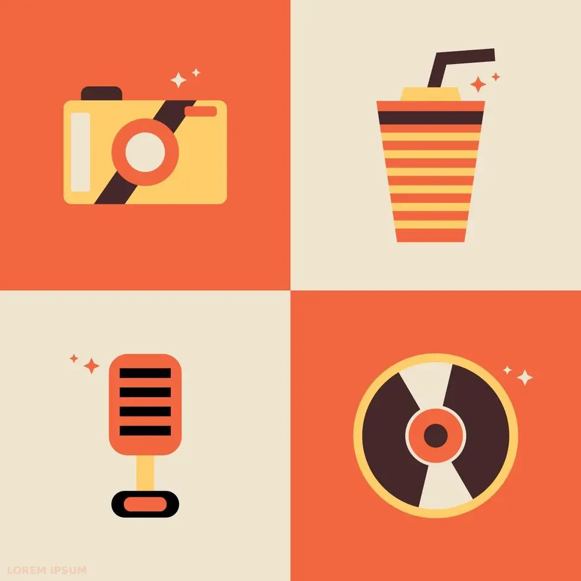
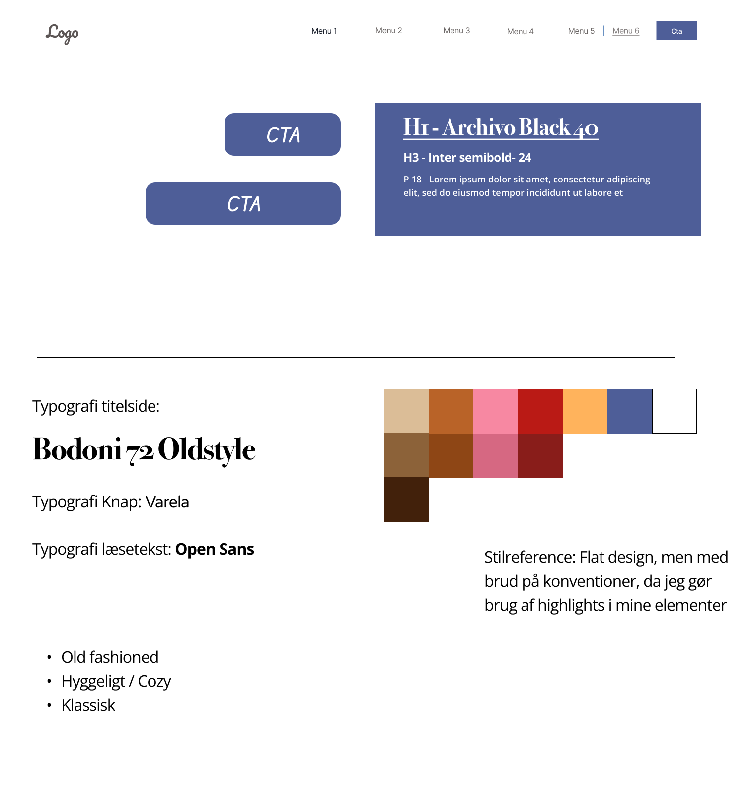
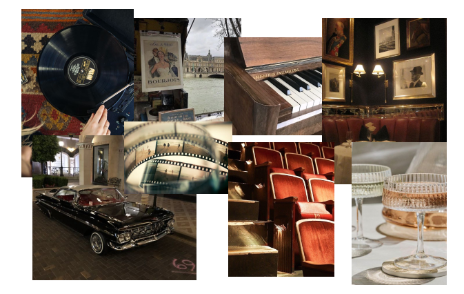
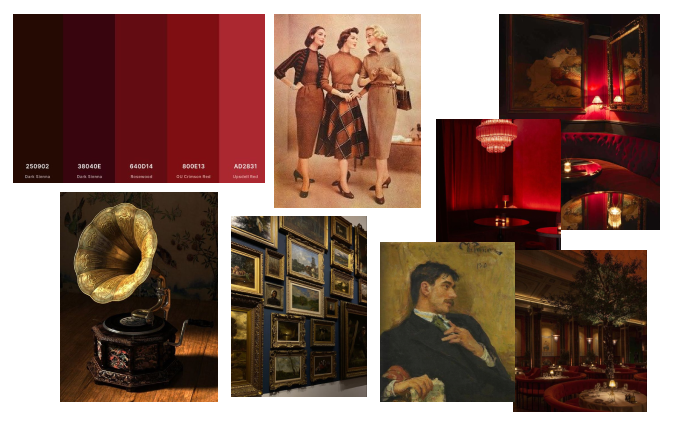
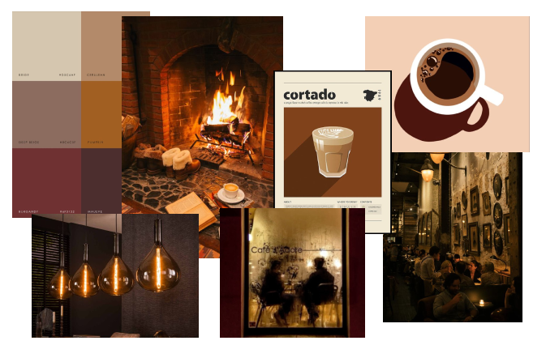
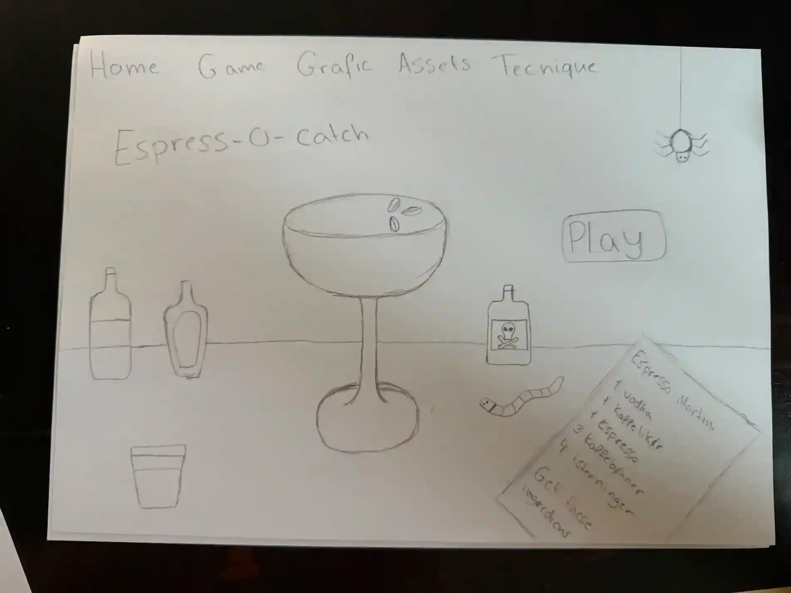
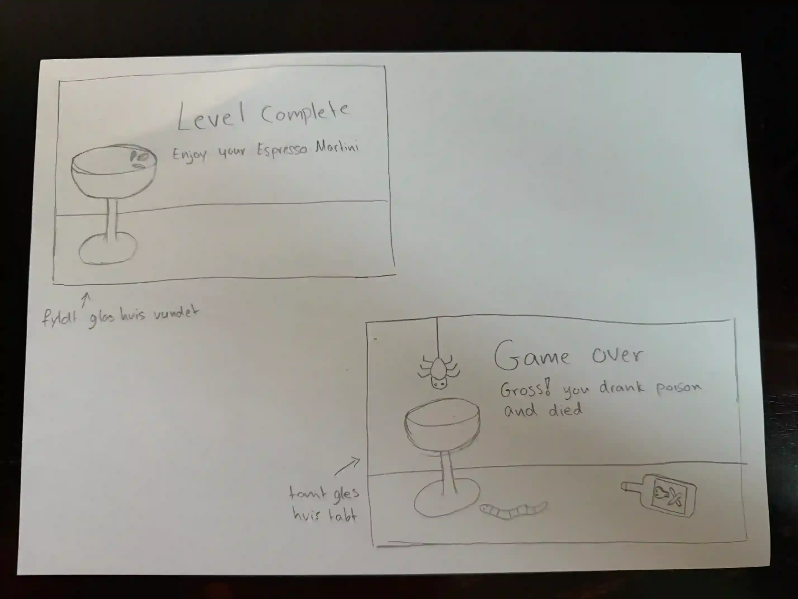
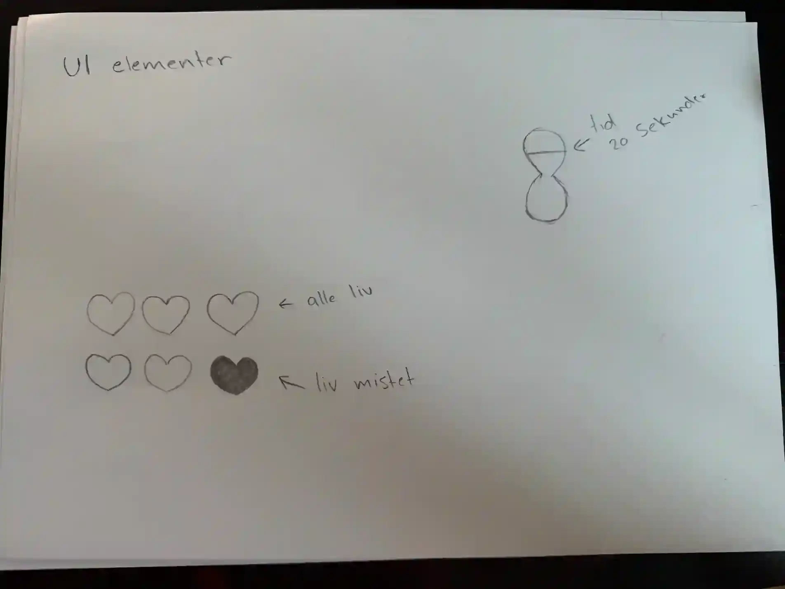

Grafik
Inpiration
I mit spil har jeg valgt at arbejde med stilarten flatdesign som udgangspunkt. Målet har været at skabe et æstetisk tiltalende spil, hvor simplicitet er i fokus, og hvor "unødvendige" designelementer er udeladt. Derfor har jeg bevidst undgået at bruge for mange former, teksturer eller andre overflødige detaljer. Dog har jeg valgt at bryde lidt med flatdesign-konventionerne ved at fremhæve visse elementer i spillet, som for eksempel espresso martini-glasset og shakeren i baggrunden, ved at tilføje highlights og skygger for at give dem ekstra opmærksomhed. Også i mine spil-elementer bruger jeg highlight og skygger

Style tile

Moodboards



Skitser


